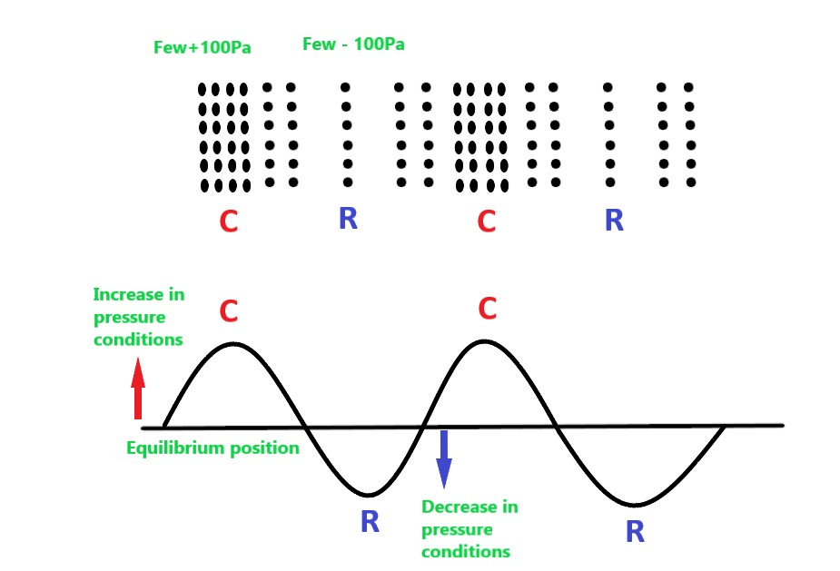
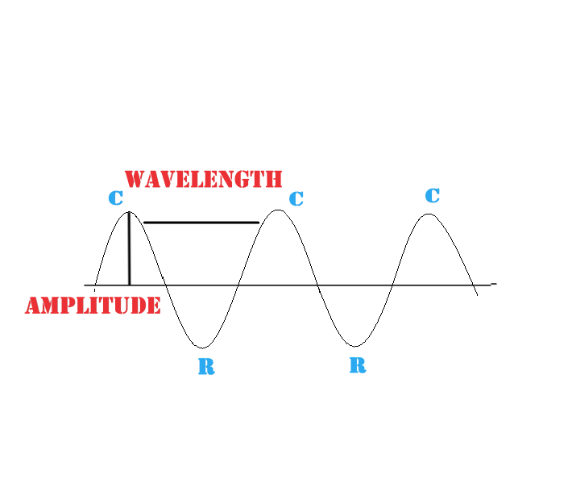
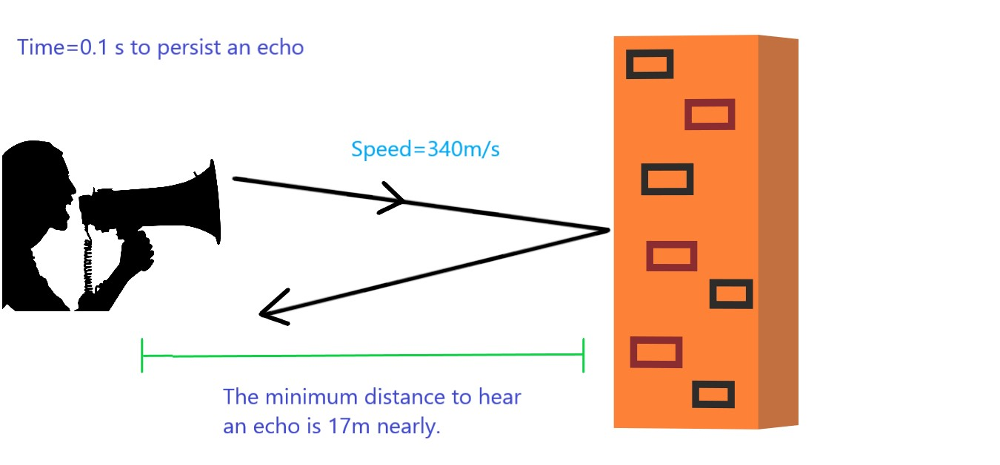
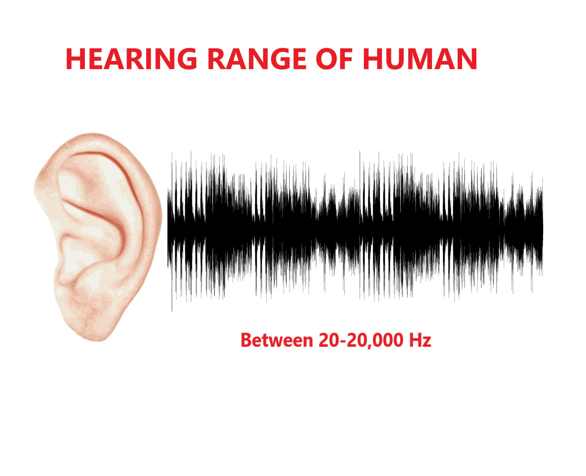

We hear sound around us every day while listening to music, stereo-system, talking others. The sensation in ear is the sound.
But there are few questions we always have that why we appreciate listening to music not a noise made by truck’s horn? What we hear is always sound? Do all animals hear same or they can hear something that we cannot? Lastly why astronauts cannot hear in Moon?
To answers these questions let’s begin our journey to sound.
Sound is a form of energy which cause the sensation of hearing. Is that all? Sound is a type of wave. Now you might think what are the types of waves. Let’s look into it.
Waves are the disturbances of propagation of quantities. Waves are of two types on the basic of medium to propagate: -
- ELECTROMAGNETIC WAVE- The wave that do not require any medium to propagate (travel). Eg: Light
- MECHANICAL WAVE- The wave that requires a medium to propagate. Eg: Sound
- Transverse Wave: The displacement of medium is in the perpendicular direction to the propagation. Let’s understand it by simple example. Place a paper boat on a pond. From a little distance make a disturbance by stick. What will you notice? Ripples in the water gradually spreading out and the boat has moved up and down. In this case the propagation of ripples occurs in side by side while the displacement of water particles was in up and down which cause the boat to float up and down. When the displacement of particles is in perpendicular to the direction of propagation, it is called transverse wave.
- Longitudinal Wave: The displacement of particles is in the direction of propagation. Let’s take a same example. But now instead of making a disturbance slowly by stick, think how a boat moves in water. It is due to its longitudinal property where the air pushes the water. The particles of move forward and keeps the boat moving in the same direction. When the displacement of the particles is in the direction of propagation it is called Longitudinal Wave.
It is because water has special property of having both transverse and longitudinal wave.
So, Sound is a mechanical longitudinal wave which requires a medium to travel and its direction of propagation is in its direction of displacement of particles.
PROPAGATION OF SOUND
Well, the next oblivious question is how sound propagate?
When an object vibrates, it produces certain energy which causes a disturbance in the surrounding medium. The disturbances caused by the vibrating objects result in the movement of air particles from its equilibrium position. The first layer of air moves forward creating a region of high pressure called as compression. From normal the pressure increases by few 100 pa (+100pa). When the first layer moves forward, it pushes the second layer and transfer the energy. While moving forward the first layer of air actually oscillate therefore gaining the potential energy. So, it moves backward and go past from its equilibrium position as the potential energy changes to kinetic energy while moving back. In this situation, the gap between the first and second layer is furthest and a region of less dense and pressure is created by decreasing few 100 pa (-100pa). This is called rarefaction. Until the first layer dissipates the potential and kinetic energy it remains to do back and forth or oscillate. While the second layer transfer the energy to the third layer and so on and so forth. The energy is transferred layer-by-layer in the form of compression and rarefaction. Note the air layer don’t moves from one position to our ears with the energy in the form of vibration, it just transfer the energy by moving back-and forth and returns back to its equilibrium position. A set of compression and rarefaction is created which transfer the energy to our ears in the form of vibration which vibrates the ear drum and thus we hear and sound propagated. For this sound takes time to propagate. We cannot hear from a distance if the energy is less as some energy is used by the layer of air to moves. Hence it gets dissipated and someone far apart cannot listen it.
Now we know that why astronauts cannot hear in Moon as there is no medium of air there for sound to propagate by this way.

CHARACTERISTICS OF SOUND WAVE
Sound depends on amplitude, frequency, time period, wavelength, speed and quality.
What is the need of this?
- AMPLITUDE: We hear music in stereo system and can regulate its loudness. In physics this is called amplitude. Amplitude determines the loudness of sound.
- FREQUENCY: Do you feel difference when a woman speaks and when a man speaks. Frequency determines the shrill ness of sound.
- QUALITY: Quality of sound helps the ear to distinguish the sound between drums, piano, violins and voice.

The next question is quality helps to distinguish sound between violin and voice. But if violin plays a song that of a trumpet or they play a same note why we can distinguish that? It is because the fundamental frequency which is same for both violin and trumpet which helps us to tell that both of them is playing a particular note but additional frequency which comes with fundamental frequency determines that although both are playing same song but they are different instrument.
Fundamental frequency + additional frequency = a sound Fundamental frequency remains same which determines the same note. And additional frequencies help to identify they are played in different instrument.
REPRESENTING SOUND WAVE IN GRAPH
The waves are drawn in graph as shown. Now for transverse wave it is easy to draw particle displacement vs distance of propagation graph as they are perpendicular. We will take the distance in X-axis and the particle displacement in Y-axis. But for Longitudinal wave, as we know both are in the same direction it cannot be drawn in X-axis. It is not possible to draw two variables in one axis and even if, it would not be easy to read the graph. So, in a 2d graph we take particles displacement in Y-axis and distance of propagation in X-axis keeping in mind that both are in the same direction for Longitudinal wave. The X-axis represent equilibrium position of particles/ normal atmospheric pressure or density. The maximum displacement of particle from its equilibrium position is called amplitude i.e the Y axis represents the particle displacement and the maximum point is its amplitude. At the top of the X-axis is +ve and below is -ve. Similarly, above the X axis represents compression or a region of high density and pressure of few 100pa from normal pressure. The upward curve is the region is called crest. Likewise, below the X-axis represents rarefaction or a region of low density and pressure of few 100pa from normal pressure. The downward curve is called trough. The curve represents a smooth back and forth movement of particles. The distance from one crest to the next consecutive crest or one trough to the next consecutive trough is called wavelength. One compression and rarefaction is called a cycle. Frequency is just how many cycles (compression and rarefaction) per second. The number of cycles in a second is called a frequency. We already know that voice of woman is shrill compared to man. This shrillness is determined by frequency. Actually, the numbers of cycles in a second of a woman voice is more as compared to the number of cycle in a second of male. Now, you will notice that the wavelength of a woman voice is much shorter than a wavelength of man. This is because wavelength is the distance from two consecutive crest and trough. If the number of cycles increases in a second, just like in case of woman’s voice (frequency), the distance of wavelength became shorter. Time period is just the reciprocal of frequency. It states how much time the wave require for one cycle (compression and rarefaction).

So, time period is the time taken for one oscillation or cycle.
While frequency is the number of cycles covered in one second.
T=1/f
To determine the speed of sound:
Speed=Distance/Time
Here,
Distance between two consecutive compression or rarefaction is wavelength. Time here is the Time period which tells how much time it requires to complete a cycle. Speed= Wavelength/Time period From here we can derive another relation:
Wavelength * 1/Time period = Speed
1/Time period = Frequency (as Time period is the time taken to complete one cycle and frequency is the no of cycles in a second)
Therefore,
Wavelength*Frequency=Speed
SUPERSONIC AND SUBSONIC
Why these topics? What is the relation of these to sound? Let’s look at it.
The speed of sound is nearly about 340m/s. It depends on the different medium. Speed of sound is more in liquid and solid than gas as the particles are closely packed which makes it quicker to transfer the energy. Now, a body travelling more than the speed of sound is have a supersonic speed. While a body travelling at a speed less than the speed of sound is subsonic. We often use the term Mach number which is just a ratio of the velocity of the object/body with respect to the speed of sound. Mach number between 0 to 1 is subsonic speed. Mach number more than 1.2 is supersonic speed. [Mach number is the ratio of velocity of an object by the speed of sound. The resultant value represents the object as supersonic or subsonic.] Another term called Hypersonic speed is used in aerodynamic of Mach number more than 5. Now, can you able to recall supersonic, subsonic and hypersonic flight or jet planes? Yes, they are termed on the basic of their speed with respect to the speed of sound. Now, if Mach Number is given, we can find the speed of the object as Mach No*Speed of sound is the speed of object. Let’s take an example, suppose Mach No. =2, therefore the speed of object is supersonic and 680 m/s. Remember, Mach no is the resultant value of ratio of the velocity of an object w.r.t speed of sound. 680/340=2(Mach no. Which is used to represents the object as supersonic or subsonic).
ECHO AND REVERBERATION
When we shout from a mountain to the open area, we listen after sometime the same sound is repeated. Why it is so? Sound also follows the law of reflection. Do you remember?
- The incident ray (here the sound wave), the reflected ray (here the reflected sound wave) and the normal (an imaginary perpendicular line) lie (fall) on same plane.
- The angle between the incident ray and the normal is equal to the angle between the reflected ray and the normal. αi =αr
- The extended version of the 2nd law i.e., as angle of incident is equal to the angle or reflection, the incident and the reflected rays cannot fall on the same side of normal. They must lie in the opposite of normal.

Speed= Distance/time
Distance=Speed*Time
Minimum time of sound persistence required by brain: 0.1s
Speed of sound is 340m/s (nearly)
Distance= 340* 0.1s = 34m (approx.)
34 meters is the total distance the sound wave covers from the observer to the reflecting surface and return back to the observer. Therefore, the distance from the observer to the reflecting surface is 17 m (nearly). Therefore, minimum distance to hear an echo is 17m as the speed of sound is 340m/s and minimum time of persistence is 0.1s and the waves cover a distance of 17 m up and 17m down (17+17=34) with constant speed and fixed time.

- If > 0.1 the reflected sound can be persistence by our brain and we hear echo.
- If < 0.1 the reflected sound cannot be persisted and we hear a continuous sound.
HUMAN RANGE OF HEARING
We humans are able to hear sound frequency of 20Hz-20000Hz. Below this and above this we cannot hear. So, others animals may listen to things we are unaware of because of our range of hearing. With respect to us, the sound we cannot hear is given a name each.
- Frequency below 20Hz which we cannot hear is called infrasonic sound.
- Frequency above 20000Hz which we cannot tolerate to hear is called ultrasonic sound.
